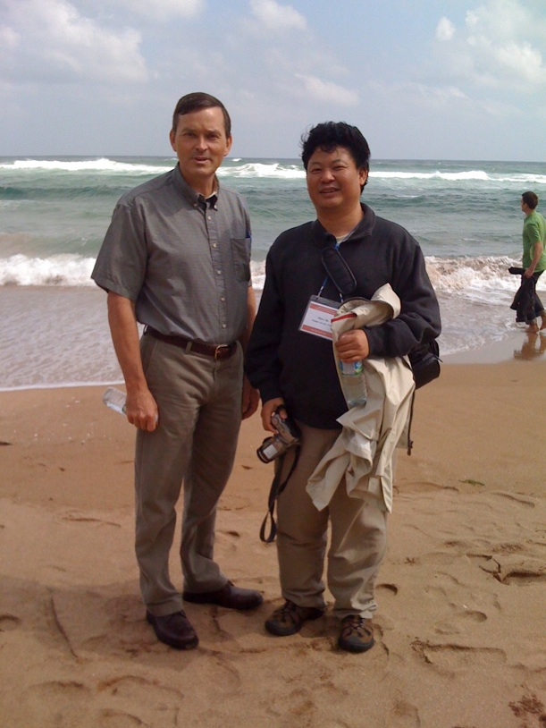

South Korea
Sunday, May 24, 2009
Yesterday I got back from a trip to South Korea to attend and speak at the International Workshop on Nanomechanical Cantilever Sensors, which was held on Jeju, an island off the south coast of the Korean peninsula. I left Sunday, May 17, at 9:30 pm, arriving Tuesday, May 19. The conference took place Wed through Friday with excursions Thursday and Friday afternoon.
My flight itnerary took me from Salt Lake City to Los Angeles to Incheon where I had to take a bus to another airport, Gimpo, to catch a plane to Jeju. Here is my mode of transportation on the LAX to Incheon leg of the journey.
Incheon aiport (Seoul). This is the nicest airport I’ve been in.
The conference was held in the Ramada hotel right on the waterfront in Jeju. Here is the inside of the hotel.
View from the conference room we used on the 8th floor.
Thursday’s afternoon excursion took us to Jungmun Beach on the south side of the island. It was a rainy day so we just went on a walk. There were about 100 people who attended the workshop, with maybe 60-70 who went on the excursion.
View of the beach.
Before going down to the beach our path took us by this famous mailbox. Note the plaque says this is the “Mail Box on the Hill of the First Love.” Don’t know what this means--there was no one to tell us the story behind the mailbox.
On the beach with Jerry who is now on the faculty of a university in Shanghai. He used to be a postdoc in Thomas Thundat’s group at Oak Ridge National Laboratory.

After walking on the beach we saw some Korean surfer dudes and someone who had gathered some tasty items from the sea.
Jeju island was formed by volcanos so there is a lot of lava rock. Here is a little further down the coast. Curious how the lava cooled into packed hexagonal columns.
Friday afternoon’s excursion was to Sunrise Peak on the east side of the island. The buses were going to leave at 2:00 pm from the hotel driveway. I arrived at 2:05 and found that they had already left. Since I hadn’t been getting much exercise on the trip, I walked a few blocks away and rented a bicycle and planned to ride east along the coast. My rented bike turned out to be pretty junky--think of a heavily used, poorly maintained Walmart special. It would only shift into about half of the available gears. Nonetheless, it was nice to get back out on a bike.
One of my stops was at a pagoda shrine. Here is one of the buildings.
Later, I came across these boats in a small harbor. Note the string of high intensity light bulbs hanging down the center of each boat. At night from my hotel room I could see numerous bright lights far out on the ocean which I assume were boats such as these trying to attract some type of sea critter. I’m not sure how they caught them though because I didn’t see any nets.
One of the places I passed was Hamdeok Beach, which was quite scenic. Note the lava rock interspersed with the sand.
Along the way, I kept seeing these odd vehicles.

I also noticed this business establishment with a very odd name. I think it was a restaurant. Need to work on the translation though.
The ride was great. I went about 35 miles and saw some scenic areas as well as a lot of the rural countryside. I was favorably impressed with the country and the people and enjoyed visiting South Korea for the first time.